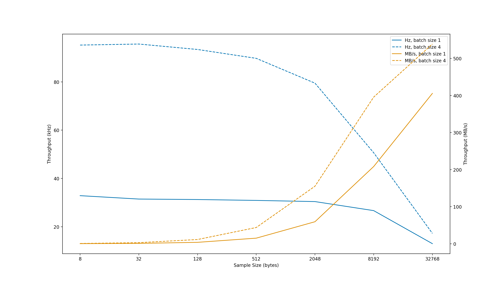

Performance¶
On a 2019 16-inch Macbook Pro with 2.6 GHz i7 and 16GB ram, writing/reading to Redis at localhost, and with no data in Redis before testing, performance varies as a function of sample size and batch size:

Performance of River reading and writing to localhost as a function of batch size and sample size.¶
Above performance tests were run with:
build/release/src/river_benchmark -h 127.0.0.1 --num_samples 300000 --sample_size <sample size> --batch_size <batch size>
The above parameter “batch size” controls how many samples at a time to write to River (i.e., StreamWriter’s num_samples parameter in Write). As can be seen in the above graphs, batching writes drastically improves performance and can be used where appropriate.